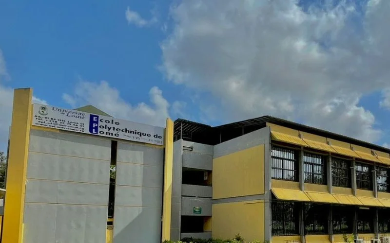

L'École Polytechnique de Lomé, une institution d'excellence depuis 1970, forme des ingénieurs de haut niveau pour répondre aux enjeux technologiques et économiques du Togo et du continent africain.

Notre Histoire
Fondée en 1970, l'École Polytechnique de Lomé est la première institution d'enseignement supérieur technique du Togo. Nous formons des ingénieurs de haut niveau capables de relever les défis du développement.
Avec plus de 50 ans d'expérience, l'EPL s'est imposée comme un centre d'excellence en Afrique de l'Ouest, formant des milliers d'ingénieurs qui contribuent au développement du continent.
Notre Mission
Former des ingénieurs compétents et innovants, capables de contribuer au développement technologique et économique du Togo et de l'Afrique.
Notre Vision
Devenir un pôle d'excellence reconnu internationalement pour la qualité de ses formations et de sa recherche en ingénierie.
Nos Valeurs
Excellence académique, innovation, intégrité, responsabilité sociale et engagement envers le développement durable.
Reconnaissance Internationale
L'EPL est membre de plusieurs réseaux internationaux d'écoles d'ingénieurs et entretient des partenariats avec des universités prestigieuses en Europe, en Amérique et en Asie. Nos diplômes sont reconnus par la CTI (Commission des Titres d'Ingénieur).
Prêt à rejoindre l'excellence ?
Découvrez nos formations et commencez votre parcours d'ingénieur dès maintenant.